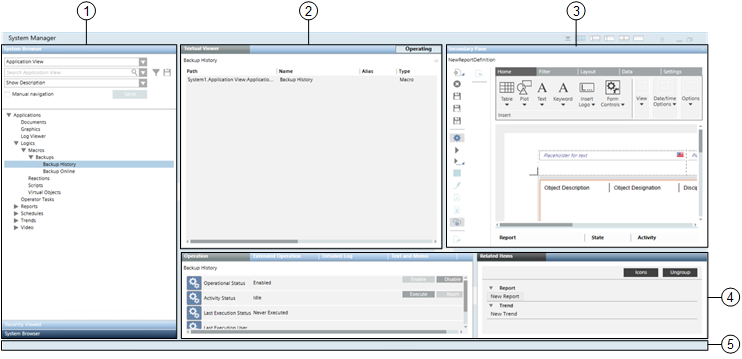

Multi-Pane Windows
The system screen can display many windows, some of which are made up of multiple panes, divided by splitters. A window can contain up to four panes. Each pane houses a functional component of Desigo CC (such as a browser for navigating and selecting system objects, a viewer for displaying site floor plans or tools for inspecting the properties of objects).

1 | Selection pane (vertically along the left). Also referred to as Navigation pane. |
2 | Primary pane (to the right of the Selection pane). |
3 | Secondary pane (opens when required, alongside the Primary pane). |
4 | Contextual pane (underneath the Primary and Secondary panes, divided into two parts). |
5 | Status bar (along the bottom of the window). This bar displays status/update messages ( |
Pane and Window Controls
You can arrange panes of a window in different layouts or interact with a window and its panes in various ways. These include:
- Click the icons on the window title bar top to
 minimize,
minimize,  restore down, or
restore down, or  maximize the window.
maximize the window. - Click the icons on the window title bar to quickly switch between the available preset layouts:
 : Selection, Primary, and Contextual panes. The Secondary pane displays only if it is already open.
: Selection, Primary, and Contextual panes. The Secondary pane displays only if it is already open. : Selection, Primary, and Contextual panes
: Selection, Primary, and Contextual panes : Selection and Primary panes
: Selection and Primary panes : Primary, and Contextual panes. The Secondary pane displays only if it is already open.
: Primary, and Contextual panes. The Secondary pane displays only if it is already open. : Primary pane only
: Primary pane only- Resize the panes in a layout by dragging the splitters, or expand/collapse a pane by clicking the button on the splitter
 .
. - Click the icon to lock the window layout
 . When the layout is locked, clicking one of the layout icons will not have any effect; this means that you cannot change the current layout, and resize, expand, or collapse the panes of the window.
. When the layout is locked, clicking one of the layout icons will not have any effect; this means that you cannot change the current layout, and resize, expand, or collapse the panes of the window. - Normally, the Secondary pane opens on demand, when you make a selection that requires it.
- When the Secondary pane opens, it takes up half the space that would otherwise be allotted to the Primary pane.
- You can prevent the Secondary pane from opening by clicking the pushpin icon
 and locking the Primary pane. When the Primary pane is locked
and locking the Primary pane. When the Primary pane is locked  , any selections (such as Related Items) that would normally display in the Secondary pane are instead redirected to the Primary pane.
, any selections (such as Related Items) that would normally display in the Secondary pane are instead redirected to the Primary pane.